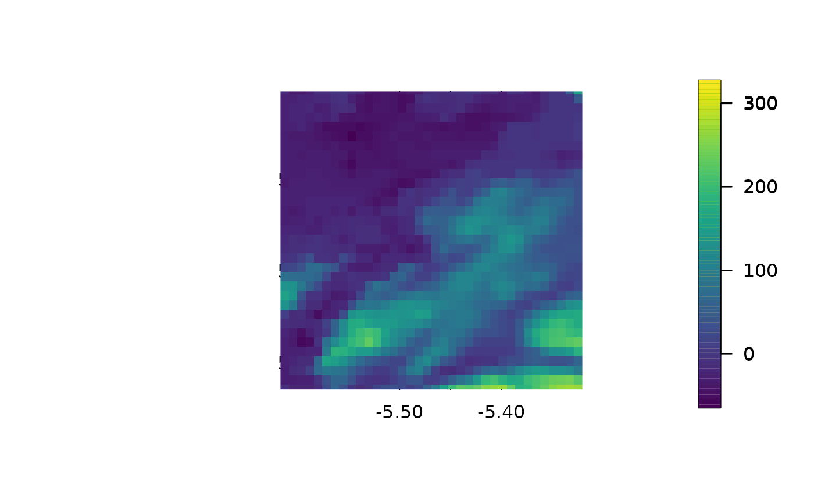
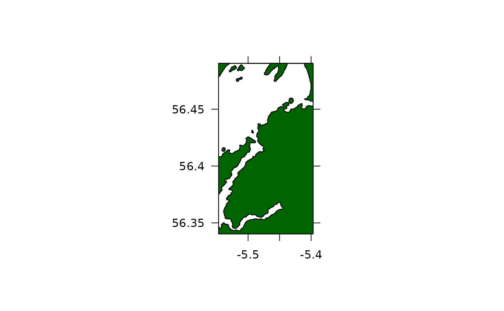
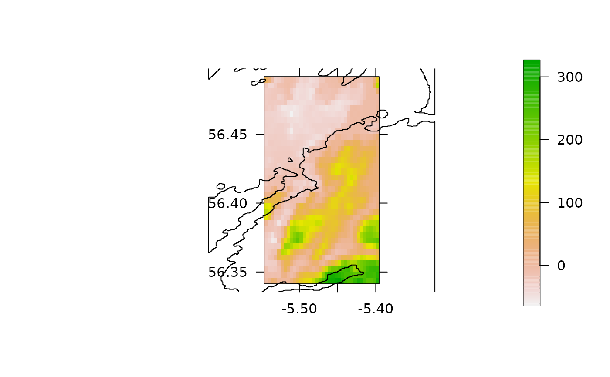
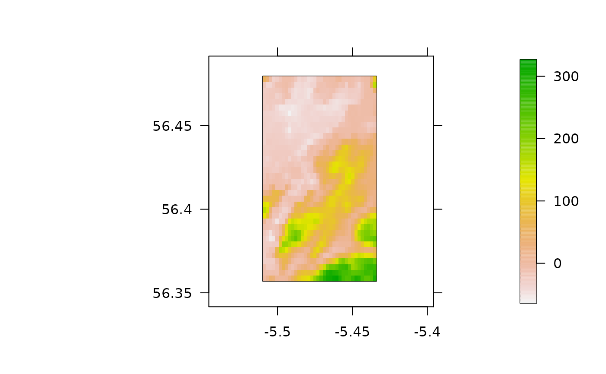
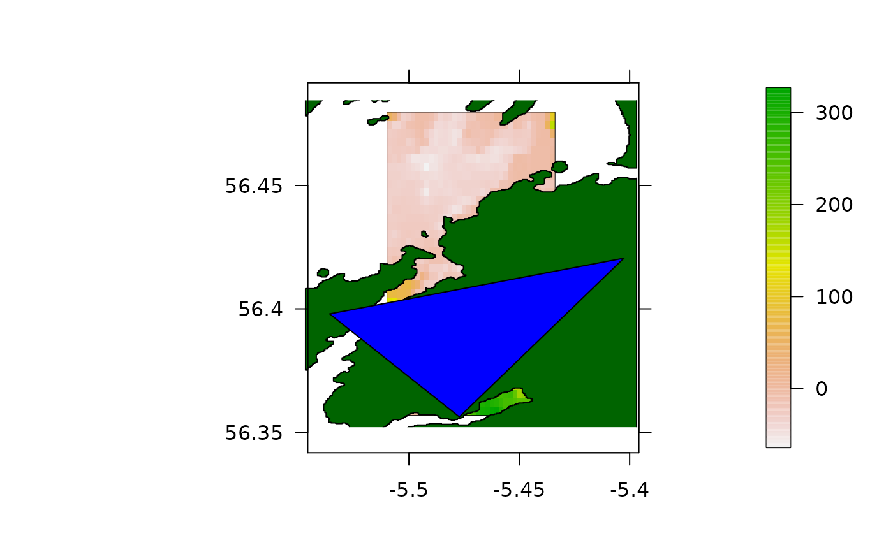

These functions are designed to facilitate the addition of spatial layers to a background map.
add_sp_points(x, y = NULL, ext = NULL, crop_spatial = FALSE, ...) add_sp_line(x, y = NULL, ext = NULL, crop_spatial = FALSE, ...) add_sp_path(x, y = NULL, ext = NULL, crop_spatial = FALSE, ...) add_sp_poly(x, ext = NULL, crop_spatial = FALSE, ...) add_sp_raster( x, ext = NULL, crop_spatial = FALSE, plot_method = fields::image.plot, pretty_axis_args = NULL, ... )
| x | A Raster* or Spatial* object, a two-column matrix of x and y coordinates or a numeric vector of x coordinates. Coordinate specifications are only supported for points, lines and paths; otherwise a Raster* or Spatial* object should be supplied. A numeric vector for |
|---|---|
| y | (optional) A numeric vector of y coordinates. This is only required if |
| ext | (optional) An |
| crop_spatial | (optional) A logical variable that defines whether or not to crop the spatial layer to lie within the domain defined by |
| ... | Additional arguments passed to the plotting functions, which are |
| plot_method | A function that adds the layer to the plot. This is only implemented for |
| pretty_axis_args | (optional) A named list, passed to |
The function adds a spatial layers to an existing plot.
These functions are designed to work with pretty_map, which produces a background plot and then adds layers to this plot. However, they can also be called directly after the definition of a background plot.
Edward Lavender
#### Example (1) Adding single layers ## Examples with raster # Define a background map and add a raster layer pretty_map(dat_gebco) #> 'x' is the only spatial information provided: plotting the background only. #> prettyGraphics::pretty_map() CRS taken as: '+proj=longlat +datum=WGS84 +no_defs'. add_sp_raster(dat_gebco) # Customise the map add_sp_raster(dat_gebco, col = viridis::viridis(100))  ## Examples with polygon layers # Define a background map and add a polygon layer pretty_map(dat_coast_around_oban) #> 'x' is the only spatial information provided: plotting the background only. #> prettyGraphics::pretty_map() CRS taken as: '+proj=longlat +datum=WGS84 +no_defs +ellps=WGS84 +towgs84=0,0,0'. #> Warning: CRS object has no comment add_sp_poly(dat_coast_around_oban) # Customise the map add_sp_poly(dat_coast_around_oban, col = "darkgreen")  ## Examples with points, lines and paths ## Define coordinates/line xy <- cbind(c( -5.532913, -5.519556, -5.500856, -5.472138), c(56.42964, 56.44220, 56.45328, 56.45846)) xy_line <- Orcs::coords2Lines(xy, ID = 1) ## Add points # via coordinates pretty_map(dat_gebco) #> 'x' is the only spatial information provided: plotting the background only. #> prettyGraphics::pretty_map() CRS taken as: '+proj=longlat +datum=WGS84 +no_defs'. add_sp_points(x = xy[1, ], y = xy[2, ]) # via matrix pretty_map(dat_gebco) #> 'x' is the only spatial information provided: plotting the background only. #> prettyGraphics::pretty_map() CRS taken as: '+proj=longlat +datum=WGS84 +no_defs'. add_sp_points(x = xy) # via SpatialPoints pretty_map(dat_gebco) #> 'x' is the only spatial information provided: plotting the background only. #> prettyGraphics::pretty_map() CRS taken as: '+proj=longlat +datum=WGS84 +no_defs'. add_sp_points(x = sp::SpatialPoints(xy)) # Add lines (best via SpatialLines object) pretty_map(dat_gebco) #> 'x' is the only spatial information provided: plotting the background only. #> prettyGraphics::pretty_map() CRS taken as: '+proj=longlat +datum=WGS84 +no_defs'. add_sp_line(x = xy_line) # Add path via coordinates, SpatialPoints or SpatialLines pretty_map(dat_gebco) #> 'x' is the only spatial information provided: plotting the background only. #> prettyGraphics::pretty_map() CRS taken as: '+proj=longlat +datum=WGS84 +no_defs'. add_sp_path(x = xy[, 1], y = xy[, 2], length = 0.05) pretty_map(dat_gebco) #> 'x' is the only spatial information provided: plotting the background only. #> prettyGraphics::pretty_map() CRS taken as: '+proj=longlat +datum=WGS84 +no_defs'. add_sp_path(x = sp::SpatialPoints(xy), length = 0.05) pretty_map(dat_gebco) #> 'x' is the only spatial information provided: plotting the background only. #> prettyGraphics::pretty_map() CRS taken as: '+proj=longlat +datum=WGS84 +no_defs'. add_sp_path(x = xy_line, length = 0.05) #### Example (2) Layers can be stacked pretty_map(dat_gebco) #> 'x' is the only spatial information provided: plotting the background only. #> prettyGraphics::pretty_map() CRS taken as: '+proj=longlat +datum=WGS84 +no_defs'. add_sp_raster(dat_gebco) add_sp_poly(dat_coast_around_oban)  #### Example (3) These functions are implemented pretty_map() ## Map of raster pretty_map(add_rasters = list(x = dat_gebco)) #> prettyGraphics::pretty_map() CRS taken as: '+proj=longlat +datum=WGS84 +no_defs'.  ## Map with a raster and multiple polygons, supplied as nested list # Generate a random prism to include as a polygon sim_prism <- sp::spsample(dat_coast_around_oban, n = 3, type = "random") #> Warning: CRS object has comment, which is lost in output; in tests, see #> https://cran.r-project.org/web/packages/sp/vignettes/CRS_warnings.html sim_prism <- sp::Polygon(sim_prism) #> Warning: less than 4 coordinates in polygon sim_prism <- sp::SpatialPolygons(list(sp::Polygons(list(sim_prism), ID = 1))) # Make map pretty_map(add_rasters = list(x = dat_gebco), add_polys = list(list(x = dat_coast_around_oban, col = "darkgreen"), list(x = sim_prism, col = "blue"))) #> prettyGraphics::pretty_map() CRS taken as: '+proj=longlat +datum=WGS84 +no_defs'. 